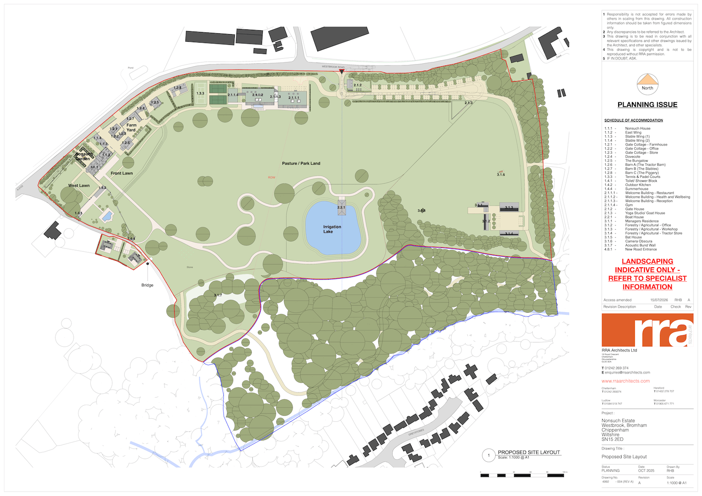
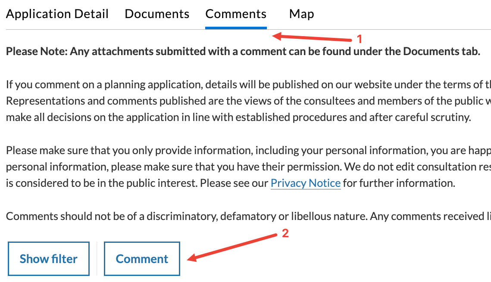
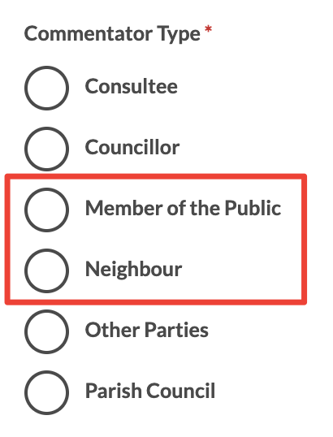

Nonsuch Estate is comprised of Nonsuch House, a Grade II* listed property, alongside many other Grade II listed structures on the estate.
Nonsuch House was badly damaged in a fire in February 2022, and was later purchased by Boyce Group, a property development firm based in Bristol.
Boyce Group has submitted a planning application (August 2026) that would turn Nonsuch House and its estate buildings into a 50-bedroom hotel complex, a drastic change of use that risks the character of this Grade II* listed property and its countryside setting. This is a substantial commercial development: the plans keep the fire-damaged listed house but wrap it in a great deal of new building that is not the house, spread across the entire estate, including a 1,480 sqm “Welcome Building” with spa, restaurant, bar and event space, plus a gatehouse, boat house, yoga studio, padel courts, new agricultural buildings, a new junction onto the A3102, and 91 car parking spaces. Denbanks would be demolished outright to make way for two new buildings.
The scale is striking. The floorspace of the new buildings alone would be larger than Nonsuch House and its East Wing combined, and the proposed hotel will have more rooms than the Bowood Hotel, Spa & Golf Resort near Calne, even though it is squeezed onto a fraction of the land available there. A development this size will bring additional traffic onto our roads, will not necessarily deliver any lasting economic benefit to the village, and will disturb the peace and tranquility that both residents and wildlife currently rely on.
We are Bromham residents, many of us having lived here for years (some of us for decades) with our families, in what is a peaceful and quiet corner of the countryside. We are concerned about the impact that crowds of hotel guests and new light pollution will have on local wildlife, and many of us have already been badly affected by noise from events previously held on the estate by its new owner. We are also concerned about the electric fence that has been erected across the public footpath that crosses the estate, obstructing a route residents have used for years.
We recognise the need to secure the long-term future of a Grade II* listed building at risk, and we do not object to a sensitively scaled scheme that achieves that. Our concern is that the application as submitted is for a huge, sprawling hotel complex, inappropriately scaled to achieve that outcome, and we are alarmed at the impact its size will have on our community.

1
The planning applications
There are two separate applications for this site. Each one has its own page on the Wiltshire Council planning portal, where you can read every document that has been submitted. At the time of writing, there are around 100 documents for each application.
The two applications are decided separately. If you want to object to both, you must comment on both.
Full Planning Permission
PL/2026/04847
This is the main application: it covers converting the estate into a 50-bedroom hotel complex, all the new buildings, car parking, the new road junction, and the demolition of Denbanks.
Listed Building Consent
PL/2026/05223
This application seeks consent for the physical alterations needed to Nonsuch House and other listed estate buildings to carry out the works proposed above.
Want to read the source documents yourself?
The number of documents in each application is overwhelming, but you do not need to read them all to write a good objection. We've tried to summarise our objections below in Reasons to object so you don't need to read all the documents in the full application. But if you would prefer to read them, they are available here and here.
If you don't have time to read them all, you could focus on just these three documents which, read together, will give you a good understanding of what is proposed:
- Proposed Site Layout: the masterplan drawing. The single best way to see how the scheme fits together spatially: where each building, the new road entrance, the car parking and the replacement Denbanks dwelling sit across the estate. Download (1 page)
- Planning Statement: the formal case for the scheme, setting out how the applicant argues it complies with planning policy. Download (42 pages)
- Design and Access Statement: the fullest description of the physical proposal, building by building. Download (76 pages)
2
Reasons to object
These are our reasons to object. You are welcome to use them as a guide to what you'd like to include in your own objection, but please do not just copy and paste them into your own comment. An objection written in your own words, based on your own circumstances such as where you live, disturbances you have already experienced, and what you believe will affect you most, carries much more weight with Wiltshire Council.
Keep it to planning matters
Objections only carry weight if they relate to planning policy. The following are not planning matters and will be set aside, so it's best to leave them out:
- loss of value to your own property;
- boundary disputes or private covenants;
- temporary noise, dust or disruption during construction;
- competition with another local business;
- the applicant's character, history or motives.
Each objection below cites the specific planning policies it relies on. If you'd like to read the source policy documents yourself, the two that matter most are the Wiltshire Core Strategy and the National Planning Policy Framework (NPPF).
The summary of each objection covers the main points; for a fuller version with more detail and evidence on each point, see our Detailed Objections document (PDF).
1. Too much new building, when a simpler option was never tested
The plans keep the fire-damaged listed house but wrap it in a great deal of new building that is not the house, including a 1,480 m² “Welcome Building” (spa, restaurant, bar and event space), plus a gatehouse, boat house, yoga studio, padel courts and new estate buildings.
At pre-application stage, the Council's Senior Conservation Officer said a simpler model of short-term, flexible letting of the house and existing buildings “appears to have some potential to be achieved via relatively low-key changes, avoiding significant pressure on the fabric or setting of the buildings, and therefore could be acceptable in principle.” The pre-application Case Officer similarly noted that any broader tourism or economic benefit of a hotel use “does not necessarily justify the proposals”, because the real question is whether this scale of works is justified to secure the “optimum viable use” of the estate as a heritage asset.
The full application never answers that question. Its viability report doesn't test the lower-key scenario at all; it only compares three versions of a full commercial hotel, asserts only the largest is viable, and leans on generic public figures and one comparator hotel's rates rather than a proper site-specific business case. Every alternative or reduced-scale use is rejected without specific evidence.
The Council should commission an independent review of the underlying viability appraisal, including the cost and revenue assumptions for each scenario tested, before a decision is made.
Relevant planning policies: “Optimum viable use”: NPPF (2026) Chapter 20; Planning Practice Guidance “Historic environment” Paragraph 015.
2. Building on protected open countryside
The site is open countryside, outside Bromham's development boundary, where large new building schemes should be refused unless they meet strict exceptions. This is a huge new hotel-and-leisure complex, not a reasonable reuse of what is already there.
Relevant planning policies: Wiltshire Core Strategy Core Policies 1, 2 and 12; Core Policy 39 (tourism should reuse existing or replacement buildings, and is allowed away from a village only in exceptional cases where no suitable existing buildings are available for reuse, though the estate is full of them); Core Policy 40 (hotels outside settlements should only be permitted to conserve historic buildings, not to add new sprawl).
3. Harm to a nationally important listed building and its setting
Nonsuch House is Grade II* listed, putting it in the top 8% of listed buildings nationally. The Conservation Officer's pre-application concerns about overdevelopment, the scattering of new buildings across the estate, and loss of rural setting have not been properly addressed.
The applicant's own heritage report recognises that the estate's openness is central to its importance, and admits the scheme risks “suburbanising the character of the setting”, yet it still rates the harm “low” by looking at each new building on its own, ignoring the combined loss of openness from so many new buildings (including the loss of the meadow chosen for the Welcome Building). The effect of the acoustic bund on the setting is not assessed at all, even though it is a significant engineering operation that alters the ground level. Considered as a whole, the level of harm is greater than low.
It should also be noted that the Application Form confirms development work has already started without consent, including the Boat House (“art studio”) and the outdoor kitchen. Works to, or in the setting of, a listed building without consent are a serious matter.
Relevant planning policies: Wiltshire Core Strategy Core Policies 57 and 58; NPPF (2026) Chapter 20; section 66(1) of the Planning (Listed Buildings and Conservation Areas) Act 1990.
4. A public spa, restaurant and events venue, but the town-centre test is skipped
The Welcome Building is over 1,480 sqm, larger than Nonsuch House and its East Wing combined, and will incorporate a café/restaurant, bar, event space and spa, all open to the public (the applicant specifically says the facilities are for day visitors, not just private amenities for resident hotel guests). Leisure uses this size, out in the countryside away from any town, must be backed by an impact assessment and a “sequential test” to protect the Devizes and Calne town centres.
Neither has been provided, and the Council should request this before making a decision.
Relevant planning policies: Wiltshire Core Strategy Core Policy 38 (and Core Policy 40 criterion (iv)).
5. Noise
The impact of noise on neighbours is judged on straight-line distance alone, with no background noise survey and no account of how the land between Nonsuch Estate and the residential areas of Bromham creates an open valley that carries sound. The applicant admits complaints have already arisen from events on the estate, includes a purpose-built acoustic bund that has never been tested, and its own report rejected an events venue for noise while the scheme contradictorily keeps a “flexible event space”.
The Council itself resisted an application to remove a plant-noise condition on the Bromham Community Hub in the centre of the village (PL/2025/08017), precisely because a survey found a night-time background level of just 27dB, considered “very low”. The residential areas affected by this scheme are on the village edge, and so are quieter still. The cumulative impact of a large commercial hotel's operations, including a tractor store and vehicle workshop sited near the residential boundary, and notoriously noisy tennis and padel courts, is, contrary to what is stated in the Planning Statement, very likely to affect residential amenity and potentially become a statutory nuisance without proper assessment and control.
Video filmed by Bromham residents of noise from past events held on the estate, affecting homes and residential areas in the village:
The Council should request a noise assessment that actually considers the full range of potential noise generated by the proposed scheme before determining the application.
Relevant planning policies: Wiltshire Core Strategy Core Policy 57(vii); NPPF (2026) Chapter 19.
6. Lighting and dark skies
The scheme offers only a vague promise of “low-level, shielded” lighting, with no lighting assessment, even though the applicant's own bat survey says a full lighting plan is needed, since protected bats need darkness. Residential properties in Bromham currently enjoy a completely dark rural outlook over Nonsuch Estate.
The Council should request a lighting design plan for a development of this size, covering both the ecological mitigation required for light-sensitive protected species on-site and the impact on the amenity of neighbouring residential properties in Bromham.
Relevant planning policies: Wiltshire Core Strategy Core Policies 50, 51 and 57; NPPF (2026) Chapter 19.
7. Landscape and the look of the countryside
Buildings, a car park, a new junction and lighting would be spread across an open, quiet estate, creating an urbanising change to the landscape. The applicant's Landscape and Visual Impact Assessment (LVIA) dismisses this as “negligible” and “not a valued landscape”, but Core Policy 51 requires that landscape character throughout Wiltshire is protected, conserved and where possible enhanced. It applies whether or not the land carries a national designation, and expressly protects tranquillity against intrusion from light pollution, noise and vibration.
The LVIA's justification is also weak: it dates from March 2023/February 2024 and was “re-submitted”, pre-dating key parts of the current scheme (including the acoustic bund); its site photographs were taken in January, the estate's least-busy time of year; and its analysis “has been carried out from external spaces within the public domain and not from the private spaces”, so the impact on adjoining neighbours' homes and gardens at Greystones and Minty's Top was never properly assessed. It also rates the views from the BROM2 footpath, which crosses open agricultural land in the setting of a Grade II* listed building, as “negligible”, even though it admits new buildings will be seen from it. This is an understatement.
Relevant planning policies: Wiltshire Core Strategy Core Policy 51; NPPF (2026) Chapter 19.
8. Wildlife surveys are out of date and incomplete
The Council's own ecologist notes that the ecological survey is more than two years out of date and incomplete (missing badger, great crested newt and reptile surveys), and that the application cannot properly be judged until they are done.
The Council should request these surveys before a fully-informed decision can be made.
Relevant planning policies: Wiltshire Core Strategy Core Policy 50; NPPF (2026) Chapter 19; Environment Act 2021 (minimum 10% biodiversity net gain).
9. Traffic and total reliance on cars
Planning policy requires development to be located and designed to reduce the need to travel, especially by private car, and to offer a genuine choice of transport modes. But the estate is in open countryside with no realistic walking, cycling or public-transport access, so essentially every guest, member of staff, supplier and visitor will arrive by car. The applicant's own transport assessment expects little walking or cycling and admits there is no walking or cycling infrastructure nearby.
The scheme creates a new priority junction onto the A3102, but the junction's visibility also falls short of what the Highway Authority asked for (158m and 156m against 160m). It provides around 91 parking spaces, a scale of parking that is itself an admission of car dependence, and its “sustainable travel” measure is electric buggies to move guests around the estate, which does nothing to address how they get to it.
The Planning Statement claims the site is “within walking distance of Bromham”, but this really means about 500m to the village edge along Bridleway BROM1A, which is unlit, unsurfaced, and will see increased traffic if the new Denbanks buildings are built. This is not a reasonable route for most guests, staff or day visitors to use instead of the car, particularly in bad weather, and this is clearly not a sustainable location for a development of this size.
Relevant planning policies: Wiltshire Core Strategy Core Policies 60 and 61; NPPF (2026) Chapter 15.
10. A public footpath built over
A public footpath (BROM2) crosses the site, and the Welcome Building and car park are drawn on top of it. The Council's countryside access officer says it must be diverted, but the application form says no rights of way need moving, and the Design and Access Statement claims the route is “retained and protected.”
This conflict should be resolved before the application is determined.
Relevant planning policies: NPPF (2026) Chapter 15 (public rights of way); Wiltshire Core Strategy Core Policy 57.
11. New houses in the open countryside (Denbanks and staff)
Two houses would replace the single existing Denbanks (each about 239 m² over three floors), plus a live-in staff flat in the new gatehouse and a separate Estate Manager's house, with no proper evidence that living on site is essential, and a justification that shifts from “essential staff” to helping meet general “housing need.” This fails the exceptions required for new residential development in the open countryside.
Relevant planning policies: Wiltshire Core Strategy Core Policy 48; saved Kennet Local Plan Policy HC25; NPPF (2026) policies S5(1)(c) and HO11.
12. The claimed public benefits are not evidenced
A luxury hotel, spa and golf resort already exists a few miles away at Bowood, near Calne. The application does not demonstrate any unmet demand this scheme would fill: the Case Officer's pre-application view that there is a “broad need for this type of hotel development” is echoed in Core Policy 40, though CP40 notes that this need is particularly located in the south of Wiltshire.
The scheme is deliberately designed as a self-contained destination, with its own restaurant, bar, spa and flexible event space, plus a programme of on-site “year-round activity and events”, with guests shuttled around the estate by electric buggy. Guests have little reason to leave the complex, so the claimed benefit to Bromham's pubs, shops and services is speculative.
The scheme proposes 22 full-time-equivalent jobs (up from 2), but gives no visitor numbers or economic output that could actually be weighed, and there is no mechanism to secure the jobs for local people.
Relevant planning policies: The “planning balance”: under NPPF (2026) Chapter 20 the claimed public benefits are weighed against the heritage harm, and benefits that are unproven carry little weight.
3
How to comment
Anyone can comment on a planning application. You do not have to live next to the site, and you do not need to be an expert.
There are three ways to comment. Pick whichever suits you: they all count the same.
Online, on the council's portal
The fastest way. Around ten minutes.
- Open the portal page for the application you want to comment on, using the "Comment on" buttons below.
-
On the Wiltshire council planning portal, click the
Comments tab, then the
Comment button.

- Fill in your name, email and address. Anonymous comments are disregarded.
-
For Commentator Type, choose:
Neighbour: if you live next to Nonsuch
and will be directly affected (e.g. noise, lights).
Member of the Public: if you live further afield but still wish to object.

- For Stance, choose Object.
- Write your comment in the Comment box. Say clearly that you object, and give your reasons in your own words.
- Check everything is correct, then click Next. ⚠ This submits your comment immediately. There is no review page and no further confirmation step: clicking Next sends it straight to the council. Make sure you are happy with everything you have entered before you click it.
- To object to both applications, repeat all of the above for the second application.
By email
Send your comment to developmentmanagement@wiltshire.gov.uk.
Use a subject line of Objection to [PLANNING REF]: for example, Objection to PL/2026/04847.
Your email must still include your full name, your full postal address, your commentator type, and your stance (Object).
For commentator type, state whether you are a Neighbour (you live next to Nonsuch and will be directly affected, e.g. noise or lights) or a Member of the Public (you live further afield but still wish to object).
You can address your email to the Case Officer, Oliver Phippen, who is handling both applications.
By post
Write to any one of these addresses:
-
Planning Department
Wiltshire Council
Bythesea Road
Trowbridge
Wiltshire BA14 8JN -
Planning Department
Monkton Park Offices
Monkton Hill
Chippenham
Wiltshire SN15 1ER -
Planning Department
Bourne Hill
Salisbury
Wiltshire SP1 3UZ
You can address your letter to the Case Officer, Oliver Phippen, who is handling both applications.
Whichever way you comment, include all four of these
- Your name
- Your full postal address
- The application reference you are commenting on
- A clear statement that you object, and your reasons
Leaving any of these out may mean your comment is disregarded.
4
Common questions
What is a “material planning consideration”?
It is a reason the council is legally allowed to take into account.
Counts: highway safety and traffic, noise, loss of light or privacy, harm to a listed building or conservation area, design and scale, drainage and flood risk, ecology and protected species, and conflict with the Wiltshire Core Strategy.
Does not count: loss of a private view, effect on your property value, competition with an existing business, or the identity or motives of the applicant.
Will my name and address be published?
Comments on planning applications are public. Wiltshire Council normally publishes your name and the text of your comment on the portal, and redacts your address, email, telephone number and signature. Do not include anything in the body of your comment that you would not want to be read publicly.
Can I object if I don't live nearby?
Yes. Anyone may comment on any planning application, wherever they live. You are not restricted to applications near your home, and you do not need to have been sent a letter about it.
Can I object to both applications with one comment?
No. The two applications are considered and decided separately, so a comment on one is not counted against the other. Submit your comment twice, once under each reference.
What's the difference between the two applications?
PL/2026/04847 (Full Planning Permission) is the main application: it covers the change of use to a hotel, all the new buildings, car parking, the new road junction, and the demolition of Denbanks.
PL/2026/05223 (Listed Building Consent) is a separate, narrower application: it covers the physical alterations needed to Nonsuch House and the other listed estate buildings to carry out that work.
They are decided independently, so if you object to both you need to comment on both. See The planning applications above.
Does it matter if I use the same wording as other objectors?
Yes. Wiltshire Council may treat near-identical or copy-pasted comments as a single objection, and planning officers are likely to give less weight to a copy-pasted comment than to an objection clearly written by the person submitting it.
Use the reasons in Reasons to object as a starting point for your own thinking, but put them in your own words and relate them to your own circumstances wherever you can.
5
If you need help
If you cannot use the planning portal, or you would like help putting your objection into words, write to us at help [at] nonsuchestatewiltshire [dot] co [dot] uk and we will do our best to help. There is no charge, and we will not add you to any list.